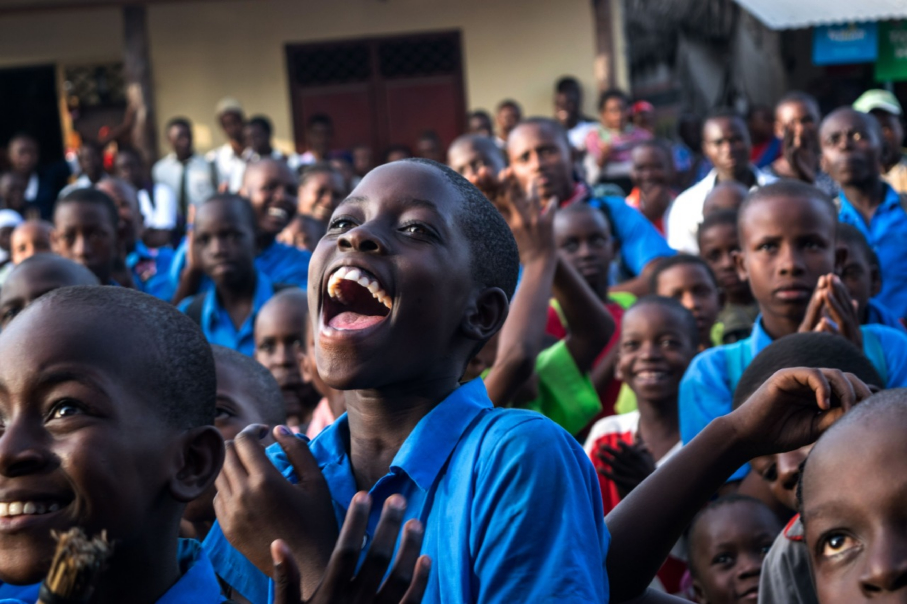

We are building a better, healthier future for people all over the world.
Working with 22 (no.) Member States, across six regions, and from more than 150 offices, cofrontiers staff are united in a shared commitment to achieve better health for everyone, everywhere.
Our primary role is to direct and coordinate international health within the United Nations system.
Our main areas of work are health systems, health through the life-course, covid-19 virus ,preparedness, surveillance and response, and corporate services
Covid-19 has caused major disruptions to the world over. The ongoing pandemic is
already affecting many aspects of our daily life and will undoubtedly force
rearrangements on our globalized society.
The COFRONTIERUS is a grassroot organization that plays a fundamental role in
fighting the COVID-19 at local as well as global level .
We bring economic and livelihood opportunities for individuals and families in places
across the world . We are striving to reconfigure themselves and to push for new
initiatives , backing state medical systems all around the world, by creating national
emergency funds, partnering with one another to channel donations, providing
assistance in nursing homes and other facilities through technical support and
medical teams.
ABOUT US
HOW WE WORK
WHAT DO WE DO
HOW DO WE DO
AIM

How do we cater unemployment?
The economic and labour crisis created by the COVID-19 pandemic is increasing global
unemployment by almost 25 million, according to. a new assessment by the International
Labour Organization (ILO).The continued sharp decline in working hours globally due to
the COVID-19 outbreak means that 1.6 billion workers in the informal economy that is nearly
half of the global workforce stand in immediate danger of having their livelihoods destroyed.
We work towards long-term rehabilitation of daily wage earners who are likely to be
unemployed for an unforeseen period due to the pandemic.
We have created a website that has a job application form along with all the requisites you require to acquire the job . Through this site you will be able to access current vacancies as well as information on the different types of jobs offered, and the recruitment process. You can also set up email alerts to be informed of new vacancies as soon as they are published.
We have created a website that has a job application form along with all the requisites you require to acquire the job . Through this site you will be able to access current vacancies as well as information on the different types of jobs offered, and the recruitment process. You can also set up email alerts to be informed of new vacancies as soon as they are published.
How do we provide healthcare facilities?

We provide curative health services to the poor and to people affected by conflict in many of
the regions of the world. The range of activities carried out by COFRONTIERUS extends
from providing hospitals, clinics and primary health care centres , to providing free
consultation and drugs. We contribute to curative health service delivery by providing
human and financial resources to covid affected people, providing healthcare materials and
equipment , developing joint projects with government, as well as creating joint committees
with government.
Across the world we provide healthcare facilities among India, Bangladesh, Sri lanka , Nepal , Germany, Italy , South Africa , Bhutan , Zimbabwe , United states of america and some parts of Mediterranean region.
Across the world we provide healthcare facilities among India, Bangladesh, Sri lanka , Nepal , Germany, Italy , South Africa , Bhutan , Zimbabwe , United states of america and some parts of Mediterranean region.